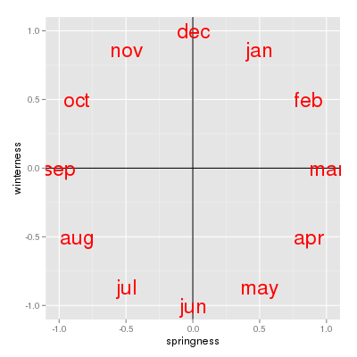
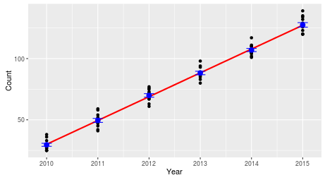
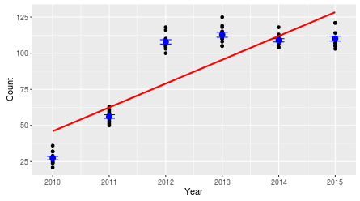

Canonical correspondence analysis (CCA) is a type of ordination analysis. There are many kinds of ordinations, but they all work by placing samples in order relative to a set of measured variables. Ordination is popular in ecological research, and most of the methods were developed with studies of species composition in ecological communities in mind.
CCA is a direct gradient analysis, which is a type of ordination in which we specify the variables that we expect are responsible for the pattern of change in composition of the measured response variables, and the samples are ordered along it. The variables we use as the gradient can be either numeric or categorical.
CCA is most appropriate for counts of discrete variables, such as counts of species found at sampled locations. CCA is able to handle the non-linear rises and falls of species abundances that are expected to occur along long ecological gradients, but work fine with linear responses as well.
For today's exercise we will analyze bird surveys done at the San Dieguito River estuary over a twelve year period. Volunteers have been conducting monthly counts of the birds seen at the estuary since 2010, and they have graciously agreed to share their data with us for use in this class.
To prepare the data for analysis, I removed species that were detected in the surveys but are not associated with aquatic habitat. I also removed species that were seen in fewer than 10 of the 120 surveys - species that are only occasionally present have a disproportionately large effect on species composition in the surveys they're detected, and removing the rarely seen species tends to produce better results. Even with these species removed we have 74 species to analyze.
The data are here , and the Rmd file for today is here - start a new R Studio project for today, and download the data and Rmd file into the project folder. You can then import the data into a data frame called birds.
Since this is the last exercise of the semester, in the interests of time the Rmd file I gave you has all of the code in the code chunks already, and we will go through the exercise together in class. You are responsible for answering the questions - once you've answered them knit the file and upload it to complete the assignment. The instructions below are written as though you will be entering the code yourself, in case there is anything in the code that doesn't make sense to you.
If you open the birds data frame, you'll see that the first two variables are the month of the survey and the year - these will be used as predictors in our analysis. All of the remaining columns are a different bird species, and the numbers in the species columns are counts of each species in each month's survey.
Most species are identified by standard American Ornithologists' Union (AOU) four letter banding codes, which are abbreviations based on the common names of the species. If the species has only one name (like Osprey) the code will be the first four letters of its name (OSPR). If the species has two words in its common name the banding code uses the first two letters of the first word and the first two letters of the second (for example American Avocet has code AMAV). Birds with more than two word names have a collection of letters from all of the words (such as Black Bellied Plover, which is coded as BBPL); the abbreviations are adjusted as needed such that every bird's code is unique (for example Herring Gull and Heermans Gull would both be abbreviated to HEGU, so Heerman's Gull is abbreviated at HEEG instead). A few species that are difficult to identify in the field have been combined into one code, such as the Western Grebe and the Clark's Grebe. For your information, a table giving the codes and common names for the birds in this data set is here.
Birds migrating through our region in the spring and fall should cause seasonal changes in species composition at the estuary. I've made circular plots that show the scaled abundance of each species (i.e. each count divided by the maximum seen for the species), which are all here. Graphs like these are great for getting an idea of what the basic annual patterns are, and to help with interpretation of the multivariate results once we have them, but the graph has way too much information to rely on exclusively for our interpretation... we really need a multivariate analysis to help us understand the seasonal patterns across this many species. Based on the circular plots, though, you can at least see a few common patterns:
If we want to understand how seasonal variation affects the community composition, we run into a problem...our months are an example of a circular variable, which repeats each year. If we number the months from 1 to 12 and sort them in order we end up with the first month (January) being maximally far away from the last month (December), even though January follows immediately after December. The numbering of the months is arbitrary, so we can start from wherever we want, but wherever we choose to start we will just move the problem to that new starting and ending place.
A better solution is to use two variables that together can identify the month without having any artificial breaks. If you look at the circular plots, it's easy to see that we could treat each month as an angle on a circle, with each month at 1/12 of the way around, such that:
We can then represent these angles as two numbers, the sin of the angle and the cos of the angle, which together
allow us to represent month with each month adjacent to the one that follows, including December and January. The
sin has the following properties:
We can thus consider the sin of the angle as a measure of "springness' - March is maximally spring, and September is maximally fall. The sin of 180 is 0, as is the sin of 0/360, so June and December both fall at the same value, right in the middle of the springness scale (they are neither spring nor fall).
We represent the December to June seasonal variation with the cos of the month's angle:
We now have a measure of "winterness", which maximizes at December, and minimizes at June, and puts September and March in the middle at 0 (the cos of 90 and of 270 are both 0).
If we use springness and winterness as numeric axes, you can see that the months get placed in order clockwise, with no break between December and January. We can thus use springness and winterness together as predictors in our analysis to model the cyclic, seasonal pattern in community composition we expect to see. |
 |
Our other time variable is year, which is (sadly) uni-directional. We can include it as a predictor to see if bird species composition is changing over time, in addition to the cyclical changes we pick up with springness and winterness. Including it as a numeric variable will mean we are only testing for a linear change - that is, a consistent trend towards more of some species and fewer of others over time.
1. Put the months in calendar order. We could add a column that has the months numbered from 1 to 12, but we can use the month column to get these numbers if we just make a factor out of them with the levels put in calendar order. If you recall, a factor in R is a grouping variable that has numbers that R uses internally, and labels for the factor levels that it shows you. If you type (in the Console):
levels(factor(birds$month))
you will see that all the months are present, but they are in alphabetical order, like so:
[1] "apr" "aug" "dec" "feb" "jan" "jul" "jun" "mar" "may" "nov" "oct" "sep"
The numbers that are assigned to them are in the order they are listed, so apr is 1, aug is 2, dec is 3, and so on. R has a list of abbreviated months built in - we can access them with (in the Console):
month.abb
which will show you the months in calendar order:
[1] "Jan" "Feb" "Mar" "Apr" "May" "Jun" "Jul" "Aug" "Sep" "Oct" "Nov" "Dec"
We can change these to lowercase with (in the Console):
tolower(month.abb)
which gives us the months in calendar order and with lower case characters, just like in birds$month:
[1] "jan" "feb" "mar" "apr" "may" "jun" "jul" "aug" "sep" "oct" "nov" "dec"
We can use this list of months in calendar order to set the order of the levels in birds$month like so (make.month.ordered):
birds$month <- factor(birds$month, levels = tolower(month.abb))
Now if you do the levels() command again:
levels(factor(birds$month))
you'll see the order is:
[1] "jan" "feb" "mar" "apr" "may" "jun" "jul" "aug" "sep" "oct" "nov" "dec"
This is what we want, since now jan is assigned the number 1, feb is assigned the number 2, and so on.
2. Calculate springness and winterness. R has built-in sin() and cos() functions, but they work on angles, not numbers from 1 to 12. Also, R likes its angles in radians, not degrees. Perhaps a quick review of radians is in order...
If you remember from your math classes, a circle with a radius of 1 has a circumference of 2π, because circumference is 2πr. We can think of 2π as the distance around the circumference, and the units of the distance around the circumference of a unit circle are radians.
There is a one to one relationship between an angle and distance around the circumference of a unit circle. For example, one degree is 1/360 of the distance around a circle, so one degree is 1/360 of 2π, or 2π/360 radians. You can thus convert between degrees and radians but dividing degrees by 360, and then multiplying by 2π. For example, 360 degrees is (360/360)2π = 2π radians, 180 degrees is (180/360)2π = π radians, and so forth.
We can use the same trick with month - each month is 1/12 of a circle on the graph above, so Jan is 1/12 of 2π, or 2π/12 radians, Feb is 2/12 of 2π or 2*2π/12 radians, and so on for the rest of the months.
With that in mind, you can see that to convert month to radians we would use (months.as.radians):
2 * pi * as.numeric(birds$month)/12 -> months.rad
This is the first time we have used a constant in R - typing the word pi into the equation causes R to use the value of π to 14 decimal places in its place.
The sin() of months in radians is our measure of springness, which we will add to the birds data set (calculate.springness):
sin(months.rad) -> birds$springness
and cos() of months in radians is a measure of winterness (calculate.winterness):
cos(months.rad) -> birds$winterness
3. Run the CCA. Now we're ready to run the CCA. The cca() command starts with a formula, which is much like the ones we've used when we ran MANOVA - the bird counts are the response variables, and springness, winterness, and year are numeric predictors. This analysis will find the patterns of variation in species composition that are maximally associated with seasonal variation or with changes between years (note that if we wanted to allow for annual changes in the timing of migration we would have needed to include an interaction between year and springness and between year and winterness - we'll leave that out for simplicity and allow any annual change in seasonal timing to go unexplained).
The command is (run.cca):
cca(birds[species] ~ springness + winterness + year, data = birds) -> birds.cca
birds.cca
The basic summary output looks like this:
Call: cca(formula = birds[species] ~ springness + winterness + year,
data = birds)
Inertia Proportion Rank
Total 2.1195
1.0000
Constrained 0.4574 0.2158 3
Unconstrained 1.6621 0.7842 73
Inertia is scaled Chi-square
Eigenvalues for constrained axes:
CCA1 CCA2 CCA3
0.30874 0.11678 0.03185
Eigenvalues for unconstrained axes:
CA1 CA2 CA3 CA4
CA5 CA6 CA7 CA8
0.4377 0.2322 0.1387 0.0964 0.0631 0.0562 0.0540 0.0473
(Showing 8 of 73 unconstrained eigenvalues)
The output begins by repeating the command we used, and then gives a table of "Inertia". Inertia is a multivariate measure of variance, so the Total inertia is the total variance in the species data. The "Constrained" line shows how much of the total inertia is explained by the predictors - the proportion of the total explained is 0.4574/2.1195 = 0.2158, which means that 22% of the total inertia is attributable to seasonal variation and change over time. This isn't bad, given that much of the seasonal variation is due to migration through the area, and the exact months that species move through the area can change from year to year.
The Unconstrained line is the inertia that is not explained by the predictors - in other words, variation in species composition that isn't attributable to the month and year of the count. Much of the unexplained variation will be due to a combination of variation in timing of migration, plus unpredictable variation in counts due to things other than season. For example, the total number of each species that migrates through is affected by factors on the breeding ground, on the wintering ground, and along the migratory route, so the number of each species is expected to vary from year to year, and as species vary in number independently of one another this will change the relative numbers of each species present (a good year for GADW may be a bad year for YBCH, and this variation will affect their relative frequencies for the year). A few species show up unpredictably in large numbers, which adds further unexplained variation to the data. With all of these sources of unmeasured, uncontrolled variation, ecological data like these typically do not show the kinds of high levels of explained variation possible in laboratory experiments, and 21% explained variation is considered fairly high in an ecological study like this one.
We also have eigenvalues for each CCA axis, one for each predictor (we used three: springness, winterness, and year). If you sum the constrained eigenvalues you get the total constrained inertia, so the first CCA axis accounts for 0.31/0.4574 = 0.675 or 67.5% of the explained inertia, CCA2 accounts for 0.12/0.4574 = 0.255 or 25.5%, and CCA3 accounts for the remaining 0.07/0.4574 = 0.070 or 7.0%.
4. Test the CCA for statistical significance. Before we do too much interpretation, we should confirm that there is actually a statistically significant effect of springness, winterness, and year on species composition. Vegan offers a randomization test for ordinations. Randomization tests calculate a test statistic (such as the amount of inertia that is explained by the predictors) from the actual, observed data, and then randomly shuffle the predictors with respect to the bird abundances and calculate the statistic again. The null hypothesis is that the relationship between the predictors and the bird species composition is non-existent, and any explained variation is just due to random chance - so, this shuffling process simulates what the null hypothesis says is true of the data. This shuffling process is repeated many times, and the number of times the randomly shuffled data has more inertia explained than the real, observed data does is recorded. Dividing the number of randomly shuffled outcomes with more explained variation than the observed data does by the total number of random shuffles gives us a p-value - the probability of getting a random outcome that explains as much variation as the CCA of our observed data.
This sounds complex, but vegan makes it really easy - we can get a randomization test for our CCA with (in the Console):
anova(birds.cca)
With just the cca object identified, we get an overall test of significance for the model. We actually want a test of each predictor, so we can use (cca.anova):
anova(birds.cca, by = "term")
This will give us tests of each of the predictors. With this approach we are testing the predictors sequentially - the first variable (springness) is tested, and then variation not already explained by springness is tested for winterness, and then finally year is tested.
We could instead test "marginal" effects, which are the effects of each predictor that aren't shared with the others, using (in the Console):
anova(birds.cca, by = "mar")
Our three predictors are un-correlated with one another so we'll get the same results with either by = "term" or by = "mar", but if predictors are correlated with one another these different options will produce different results.
Finally, we can test whether the axes are explaining a significant fraction of the total inertia with (in the Console):
anova(birds.cca, by = "axis")
You'll see that all three of the constrained CCA axes are significant.
5. Interpret the results graphically. Now we should try to figure out what's going on - time for a graph. The vegan package's author recommends building the plots one element at a time, so that's how we'll do it. The approach isn't too different from ggplot(), in that we add elements to the graph one at a time until we have the final product we want, but instead of one big, long command connected with pluses R's base graphics are constructed with commands issued one line at a time.
First we set up a blank plot, which we will add things to in later steps (make.triplot):
plot(birds.cca, type = "n")
Now we'll add points that show where the individual counts fall (these are called "sites" scores by vegan, because the traditional ecological community data matrix has data collected at a site in the rows, and the species observed in the columns. In our case all of the data is collected at a single site, but in different months and years - but, regardless, the "sites" scores are the scores for the rows in the table, and are numerical representations of species composition). The sites scores won't be individually labeled because we wouldn't be able to read them, so we will plot them first so they'll be in the background (next line in make.triplot):
points(birds.cca, display = "sites", cex = 0.8, pch = 21, col = "gray", bg = "lightblue")
This plots the site scores using a filled circle plot symbol (pch = 21) with a gray outline (col = "gray") and a light blue background fill color (bg = "lightblue").
Next we'll add vectors indicating the environmental predictors (next line of make.triplot:
points(birds.cca, display = "bp", arrow.mul = 1.5)
"bp" is short for "biplot", and it adds the vectors. Using arrow.mul allows you to control how long the arrows are - 1.5 seems to make them long enough to read.
We now have arrows but haven't labeled them yet - we can add the variable names to the ends of the vectors with (next line of make.triplot):
text(birds.cca, display = "bp", arrow.mul = 1.5)
Now to add the species - these will be displayed by the abbreviations in the column names, and there will be 74 of them, so we'll shrink them a little and make the red so we can read more of them. Even at that there are too many to see, so we'll use a vegan command that selects which labels to include so that they are non-overlapping and readable (next line of make.triplot):
orditorp(birds.cca, display = "spec", cex = 0.75, col = "red")
If we had used text() we would have gotten all 74 of the species plotted, which would be a mess. The disadvantage of using orditorp() is that only a few of the species names are displayed, so we can't use the graph for a comprehensive interpretation, but a graph with so many labels that it's not readable can't be interpreted at all. We'll follow up with some additional numerical interpretation steps later that we can use to interpret whichever species we're interested in.
The size of the text labels is set by cex (short for character expansion) and using a number between 0 and 1 shrinks the text - 0.75 gives us text that is 75% the size of the default. Setting the color to red with col = "red" makes the text easier to see.
You can see from the plot that springness points to the upper right quadrant and winterness points to the lower right - this means fall is in the lower left and summer is in the upper left, and the seasons run counter-clockwise around the plot.
Take a look at the plot and write down a few species codes that are most associated with each season - that is, they are furthest away from the origin in the season's quadrant. You can then look at the abundances of these species on the circular plots to see if they really are most abundant in those seasons - this version of the circular plots puts the species graphs in CCA1 order (that is, the CCA1 scores for each species were used to order the graphs, from the biggest negative score to the biggest positive score). The ordering is like reading sentences in a book - start on the first row, read left to right, then continue on the next. You'll see that there's now a nice transition from species that are primarily present in the summer and fall to species that are there primarily in the winter and spring. This version puts the species in CCA2 order - you'll see the end points have species that are found in the spring and early summer on one end and species that are present in the fall and early winter on the other end.
You can see from the triplot that year has the smaller effect, at least on these first two axes. There seems to be relatively little change in species composition over time - we'll check to see if the third axis is representing change over time shortly, but it's not a big part of the patterns uncovered by axis 1 or 2, which are primarily about seasonal variation.
We should expect some variation in the timing of migration, which will make the points from the same month vary in species composition between years. We can get an idea of this variability by adding "spider" lines that connect the points, which originate at the centroids for each month, and connect all of the counts made in the same month over the twelve years of data (the radiating lines look a little like a spider's legs, thus spider lines). Add these spider lines with the command (in between the text command for bp, and the orditorp command that put the species labels on the graph):
ordispider(birds.cca, birds$month, col = 3, lwd = 2)
You'll see that on average the species composition changes from month to month (because the centers of the spider lines are in different locations), but there is variation in the species composition for any given month between years (because the spider legs have non-zero length).
The other things you should notice is that the spiders have shorter legs, and overlap each other less through spring, but spread out a lot and overlap between summer and fall - this is because the fall migration is a more leisurely affair, with species in no big hurry to leave their breeding grounds as long as there is food to eat. In the spring they are all on their way to their breeding grounds, and they don't mess around about it.
6. Calculate loadings. Let's calculate some loadings now. We can calculate the correlations between the birds and scores for the first three axes by first extracting the site scores (cca.scores):
scores(birds.cca, choices = c(1,2,3), display = "sites") -> birds.cca.scores
Then, we correlate the species with the scores we just calculated (cca.loadings):
cor(birds[species],birds.cca.scores) -> birds.loadings
If you click on the birds.loadings object in your Environment, it will open up as a View with columns you can sort. The rows are labeled by species name, and the columns are loaded by CCA axis number.
If you click on CCA1 to sort it, you'll see that CCA1 has high positive loadings for AMWI, BUFF, LESC, and several other species. Since CCA1 separates species that are common in the winter and spring from those common in the summer and fall, these species are at high relative frequencies in the winter and spring months. At the other end, with large negative correlations, are the species found more often in the summer and fall, including GRHE, SNEG, YBCH, and others.
If you click on CCA2 to sort it, you'll see that CCA2 has high positive correlations with BBPL, BEKI, BVSH and others. CCA2 separates species that are common in spring and summer from those that are common in fall and winter, so these species are common in fall and winter. At the other end are the species common in spring and summer, which include FOTE, YBCH, GRHE and others.
To get a more quantitative assessment of the importance of the predictors in determining the CCA axes, we can correlate our predictors with the site scores (cca.correlate.predictors.with.scores):
cor(birds[,c("springness","winterness","year")],birds.cca.scores)
which gives you the following:
CCA1 CCA2 CCA3
springness 0.6684869 -0.3468408 -0.009743254
winterness 0.6553913 0.6466775 -0.037993735
year -0.0668071 0.1311264 -0.653069134
The first CCA axis is positively correlated with both springness and winterness, so it represents a spring+winter/fall+summer axis, which separates the two migratory periods. The second axis is negatively correlated with springness but positively correlated with winterness, so it deals with the smaller amount of separation found between winter+fall/spring+summer periods.
You'll see that year is actually much more correlated with CCA3 than with 1 or 2. Since the axes are calculated in order, the third axis accounts for less variation than the first two (only 7% of the 21.5% explained variation), but it was statistically significant.
I made another set of graphs for all the species, this time showing the average count each year for each species, with the species sorted in CCA3 order. You'll see that the species with low CCA3 scores (the first ones in the first row of graphs) are all increasing over time - these include ROET, BEVI, MAGO, and several others. Species with high CCA3 scores (last ones in the final row) are decreasing over time, such as WISN, BWTE, and WIPH (the final species, Wilson's phalarope, is not very convincing though - it appears that it is usually uncommon but they counted a lot of them in 2012, and the numbers have returned to more typical levels since then). In the middle are species that either have been pretty consistent in abundance over time (or randomly varying), or have changed but not in a straight line - BEKI for example seem to have increased to a peak in 2017 and then have declined, such that their relationship with year is fairly strong but not linear).
Now that we have some idea of which species are changing over time and which aren't we can calculate the correlation coefficients with (correlate.counts.with.year):
cor(birds[,c("BEVI","MAGO","WISN","BWTE","WIPH","BEKI")], birds$year)
From the correlations you'll see that as expected BEVI and MAGO are increasing, WISN and BWTE are decreasing, and WIPH and BEKI are not as strongly associated with year as the others.
7. Test whether the change in species composition over time is linear. Let's take advantage of the fact that we have year as a predictor to learn one last general lesson about statistical analysis, which is: the way that we choose to use variables in the analysis has important effects on the results. For a variable like year, we can either consider it to be a numeric variable that causes consistent changes in species composition from year to year, or as a categorical variable that can produce differences in species composition from year to year, but not necessarily in a consistent, linear fashion.
|  |
We included year as a numeric variable, which means that the only effect of year we are able to detect is one that changes in a consistent, linear way. A linear change in counts of a species would look like this - a straight line through the middle of the counts, because the same number of birds are added to the count each year. |
|
Obviously, this is one possible way that birds could change in numbers over time, but there are many other possibilities. |
|
|  |
For example, the counts could change from year to year, but not in a linear fashion. This particular example shows a species that increased rapidly between 2010 and 2012, and then leveled off. The straight line on the graph is how our year predictor tells us the numbers are changing, but it's not really capturing the pattern in the data. How would we account for this? We could continue to use year as a numeric variable, but use year squared, or year cubed to model this non-linear trend. This might work for the pattern to the left, since it would allow the data to increase and level off, but the pattern could be different - oscillating between high and low counts, for example. To represent any change from year to year, regardless of the pattern, we can use year as a categorical variable - that would allow us to use the mean for each year as the predicted value in the model, and it wouldn't matter if there is a clear trend from year to year or not. . |
Better yet, we can combine these two approaches - we can include year as a numeric variable to test for a linear trend, AND include year as a categorical predictor to see if there is any predictable change from year to year that isn't captured by the linear trend. If we then do a sequential test, in which the linear trend it tested first, and then the differences in mean from year to year are tested after accounting for the trend, then we'll know if the categorical variable is picking up on non-linear patterns.
We can test for this with a cca model like so (cca.test.for.nonlinear.year):
cca(birds[species] ~ year + as.factor(year) + winterness + springness, data = birds) ->
birds.yr.fact.cca
anova(birds.yr.fact.cca, by = "terms")
You'll see that there is a linear trend, but year as a factor is also significant - there is thus some variation from year to year that isn't captured by the linear trend over time.
Upload your Word file from your knitted Rmd to the course web site. This is the last exercise for the semester, hope you enjoyed the process and learned a lot!
{kind=link}